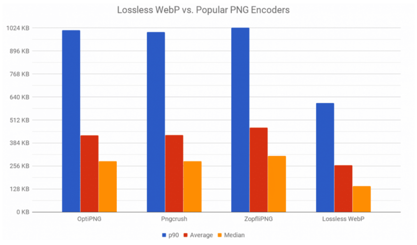

WebP — это формат файла, разработанный компанией Google в 2010 году. Его особенностью является продвинутый алгоритм сжатия, позволяющий сократить размер картинки без видимых потерь в качестве.
Да, другие форматы тоже поддерживают сжатие, но технологии, стоящие в основе WebP, куда прогрессивнее. И если сравнивать WebP с конкурентами в соотношении степени сжатия к качеству картинки, то разработка Google одержит уверенную победу.
В среднем вес картинок сокращается на 25–35%, что позволяет вебмастерам размещать на сайтах больше изображений, не тратя впустую драгоценное пространство на жестком диске арендованного VDS.
При разработке формата сотрудники Google использовали те же методики сжатия, что используются в компрессии кодеков VP8.
Естественно, основное преимущество — это размер. Сокращение размера положительно влияет сразу на четыре аспекта работы в интернете:
Поддержка данного формата среди браузеров и веб-приложений постепенно растет. Сейчас с WebP не возникает проблем ни в Google Chrome, ни даже в Safari. Но остались сайты и программы, которые все еще не знакомы с этим расширением картинок. Поддержка в браузере Apple появилась не так давно, а в Internet Explorer не появится никогда.
Как я уже заметил выше, проблема не только в браузерах, но и в других программных решениях. К примеру, в WordPress нет нативной поддержки WebP, а это, между прочим, популярнейшая CMS в мире. И таких ресурсов все еще много.
А еще WebP-файлы зачастую нечем открывать на компьютере. Поэтому некоторые пользователи Windows и Linux негодуют, когда пытаются скачать картинку через Google Chrome, а получают файл с невнятным расширением, который нельзя открыть.
JPEG — формат, отлично подходящий для изображений с большим количеством цветов. Он мало весит и имеет приемлемое качество, из-за чего обрел столь большую популярность среди пользователей.
Главный недостаток JPEG — заметная потеря в качестве и детализации из-за недостаточно продуманных алгоритмов сжатия. Это особенно заметно при приближении или когда у картинки изначально не слишком высокое разрешение.
У WebP качество картинки практически не теряется. Если ознакомиться с галереей Google, то станет понятно, что отличить их формат от высококачественных JPEG практически невозможно. Это видно только по размеру файлов.
Сравним одинаковые картинки с одинаковым размером, слева фориат JPEG, справа WebP:
Сравнивая эти две картинка мы видим, что разрешение WebP практически не уступает качеству JPEG, потеря качества видимо связана с весом файла. Но как мы уже отмечали выше, практически без потери качества у нас снижен вес картинки.
PNG — формат, ставший золотым стандартом и сумевший сохранить идеальный баланс между качеством и весом. Он подходит для изображений с логотипами или некрупным текстом. Там, где нужна высокая детализация.
Но речь идет о графике. С фотоснимками PNG справляется хуже более узкоспециализированных расширений. К тому же PNG заметно тяжелее того же JPEG даже после компрессии (хоть и сохраняет высокое качество).

WebP по детализации и цветопередачи на одном уровне с PNG. Разницу трудно заметить даже при сравнении лоб в лоб. Он хорошо отображает как графику, так и фотографии. При этом размер зачастую ниже, чем у PNG, на 30%.
Сравним одинаковые картинки с одинаковым размером, слева фориат PNG, справа WebP:
Сравнивая эти две картинки можно сделать такой же вывод как и с форматом JPEG, а иногда вес имеет значение.😉
Очень хороошо про этот формат написано на этом сайте.